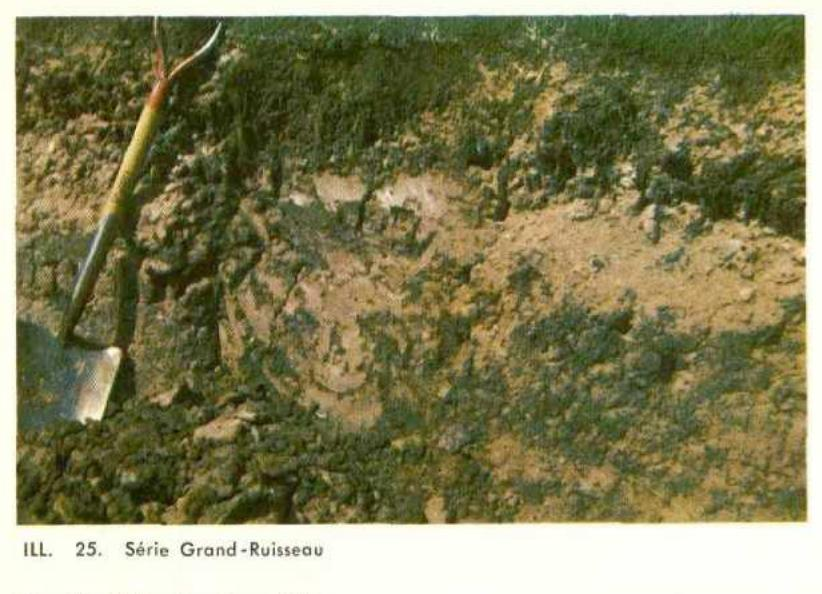

Identification & Caractéristiques Générales
La série Grand-Ruisseau regroupe des sols minéraux développés sur des dépôts argileux calcaires d'origine marine ou estuarienne, mis en place au Quaternaire dans les basses-terres du Saint-Laurent et les régions maritimes du Québec, notamment aux Îles-de-la-Madeleine. Ces sols se rencontrent en topographie plane ou sur des pentes complexes et isclines. Sur les versants inclinés, la dynamique morphogénétique est caractérisée par une érosion hydrique active ayant fréquemment entraîné le décapage de l'horizon de surface et une troncature du profil pédologique.
Sur le plan morphologique, le profil de type régosolique montre un développement pédogénétique minimal, caractérisé par une absence ou une ébauche très discrète d'horizon sous-jacent (Bm ou Btj). La texture dominante est un loam argileux lourd, caractérisé par une structure massive et une compacité élevée restreignant la conductivité hydraulique à saturation. Le drainage naturel est variable, allant d'imparfait à modérément bon selon la position topographique. La réaction du sol (pH) est neutre à légèrement alcaline, avec la présence de carbonates de calcium libres à faible profondeur, une forte capacité d'échange cationique et un pourcentage de saturation en bases élevé.
Agronomiquement, bien que la fertilité chimique intrinsèque du sol Grand-Ruisseau soit élevée, sa mise en valeur est fortement contrainte par la lourdeur texturale, la plasticité de l'argile et la susceptibilité à l'érosion sur les pentes. L'utilisation agricole se limite principalement à la grande culture céréalière, aux cultures fourragères pérennes et aux pâturages. Les principaux aménagements requis comprennent l'installation d'un réseau de drainage souterrain artificiel pour améliorer la portance et la structure, ainsi que l'application de pratiques culturales anti-érosives telles que le travail du sol suivant les courbes de niveau et le maintien d'une couverture végétale permanente.
Classification Taxonomique & Environnement Pédologique
| Ordre Pédologique | Régosolique |
|---|---|
| Grand Groupe (SCSS) | Régosol orthique |
| Sous-Groupe Taxonomique | Régosol orthique |
| Famille Pédologique | Argileuse-fine, mixte argileux, alcalin (calcaire) |
| Mode de Dépôt Parental | Morainique |
| Classe de Drainage Naturel | Imparfaitement drainé |
| Régime Thermique & Humidité | Frais / Perhumide |
Description Morphologique du Profil Type
Séquence génétique des horizons pédologiques caractérisant le profil type représentatif de la série Grand-Ruisseau :
Profil représentatif — Pédologie des Îles-de-la-Madelei
✓ Source : Pédologie des Îles-de-la-Madelei — Page 42Couleur Munsell : 5YR 4/3, 7.5YR 4/2, 5YR 5/3
Structure & Consistance : Grumeleuse
Description morphologique : Loam argileux brun rouge (5YR 4/3) à brun foncé (7.5YR 4/2), brun rouge (5YR 5/3) à sec; structure grumeleuse; très ferme; fortement à moyennement acide.
Couleur Munsell : 10R 4/1, 10R 5/3
Structure & Consistance : Polyédrique à granulaire
Description morphologique : Argile à petits cailloux anguleux gris rouge foncé (10R 4/1), rouge faible (10R 5/3) avec courants verdâtres à sec; gumbo, massif à l'état humide; grossièrement polyédrique et fendille en séchant; faiblement acide à neutre, effervescence au champ à 20 pouces.
Profils Photographiques & Planches de Terrain
Documents iconographiques, figures pédologiques et coupes de terrain documentées dans les mémoires d'inventaire pour de la série Grand-Ruisseau :

Propriétés Physico-Chimiques & Analyses de Laboratoire
| Horizon | Prof. (pces/cm) | Sable % | Limon % | Argile % | pH | C % | N % | Ca éch. | Mg éch. | K éch. | H+ éch. | Bases tot. | C.E.C. (meq/100g) | Saturation % |
|---|---|---|---|---|---|---|---|---|---|---|---|---|---|---|
| Aa | 0-7 | 24.6 | 39.8 | 35.6 | 5.3 | 3.81 | 0.23 | 5.5 | 3.8 | 0.3 | 5.0 | 9.6 | 14.6 | 65.7 |
| C | 7+ | 20.6 | 35.8 | 43.6 | 6.3 | 0.47 | 0.05 | 3.0 | 21.0 | 0.2 | 1.0 | 24.2 | 25.2 | 96.0 |
Particularités Régionales, Phases & Variantes Pédologiques
Déclinaisons régionales, faciès texturaux, phases d'érosion ou de pierrosité et variantes cartographiées par étude pour de la série Grand-Ruisseau :
| Étude Régionale | Symbole | Appellation / Phase / Variante | Différenciation avec la série type (Analyse pédologique) |
|---|---|---|---|
| Pédologie des Ïles-de-la-Madeleine | R |
Grand-Ruisseau loam argileux | Modalité modale de référence (type de base de la série). |
| Pédologie des Îles-de-la-Madelei | GIS |
Série Grand-Ruisseau (R) | Conforme à la série type de référence (caractéristiques texturales et drainage identiques). |
Distribution Pédo-Paysagère & Représentativité Cartographique (Couverture PPS 2026)
- Havre-aux-Maisons loam (HVX) — co-occurrente dans 7 polygone(s)
- Aurigny loam (AIY) — co-occurrente dans 3 polygone(s)
- Étang du Nord sable fin (EGU) — co-occurrente dans 3 polygone(s)
Aptitudes Agronomiques, Hydropédologie & Conservation des Sols
Indicateurs Hydropédologiques & Vulnérabilité à l'Érosion (BDHP 2026)
Interprétation BDHP : Potentiel de ruissellement modérément faible. Infiltration modérée avec textures moyennes à modérément grossières.
Classement selon l'Inventaire des Terres du Canada (ITC / CLI) : Classe 2c.
- Potentiel agricole : Terroir adapté aux cultures régionales selon la texture dominante et la régie de drainage.
- Contraintes majeures : Imparfaitement drainé. Risque d'engorgement temporaire ou d'excès d'eau printanier.
- Gestion & Aménagement : Drainage souterrain ou superficiel préconisé sur les terres planes. Chaulage et apport organique régulier selon les bilans agronomiques.
- Cultures adaptées : Grandes cultures (maïs, soya, céréales), prairies fourragères et cultures maraîchères selon le contexte géomorphologique.